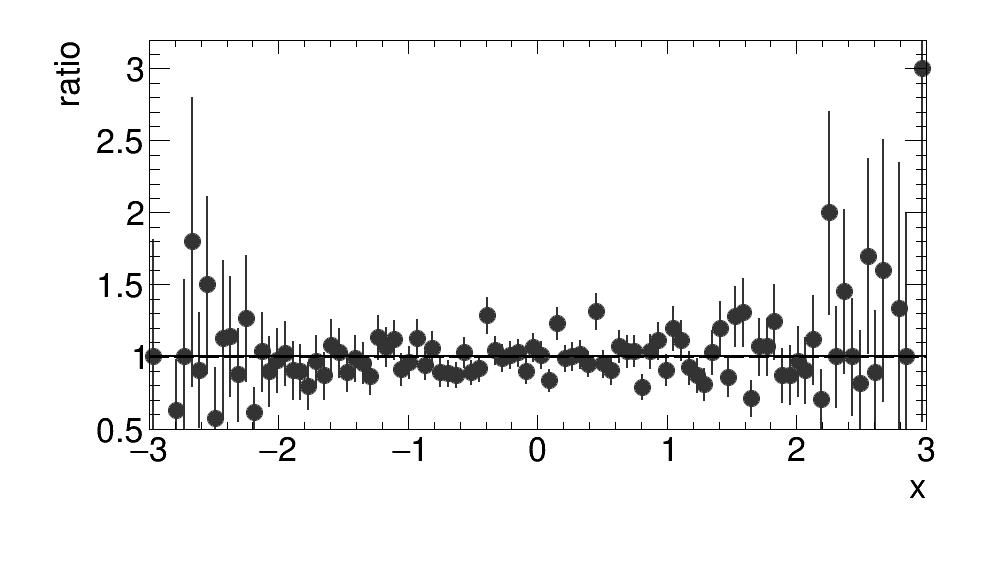
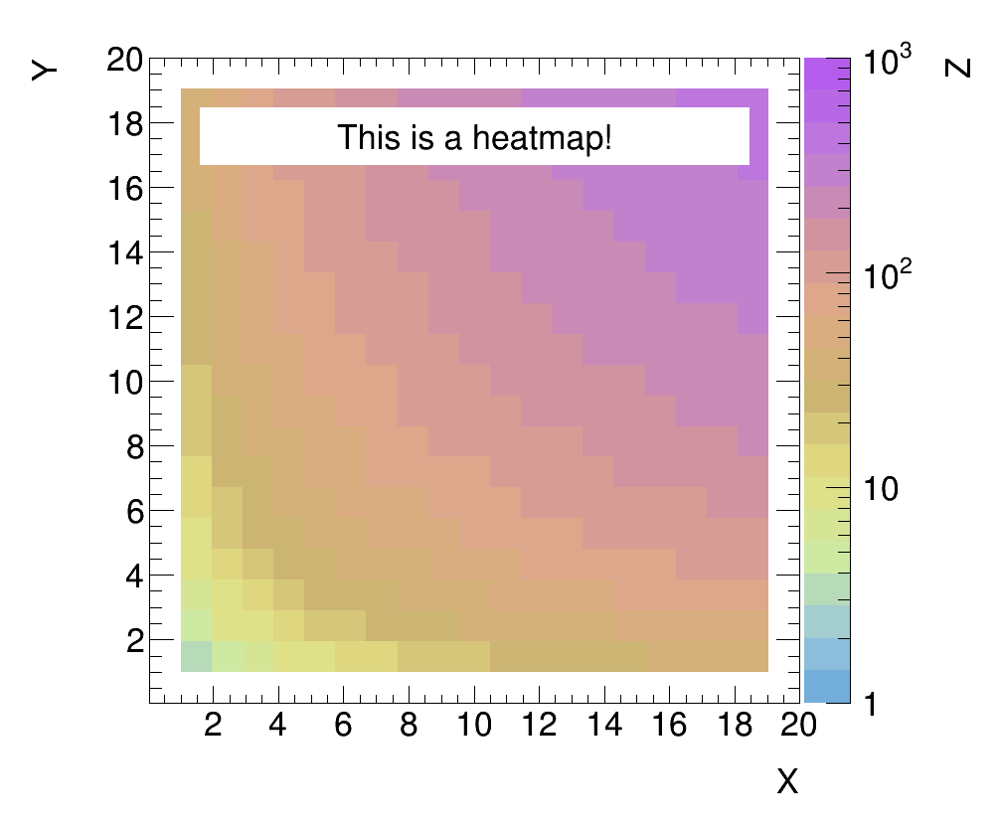
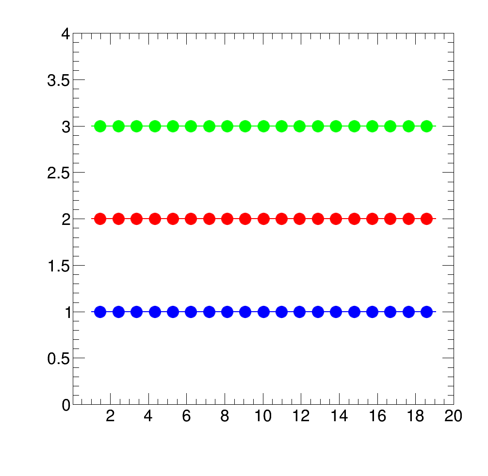
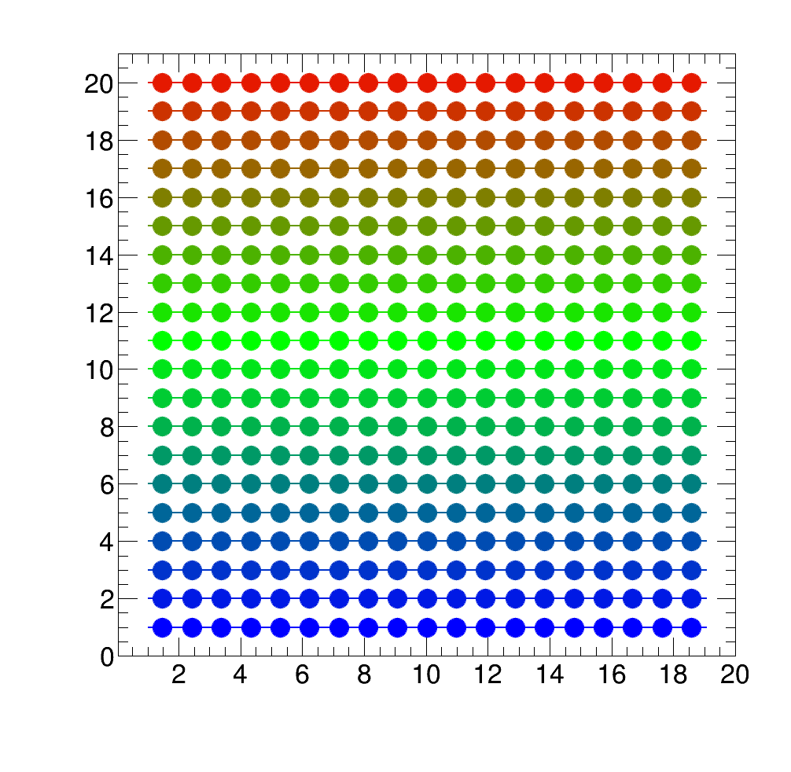
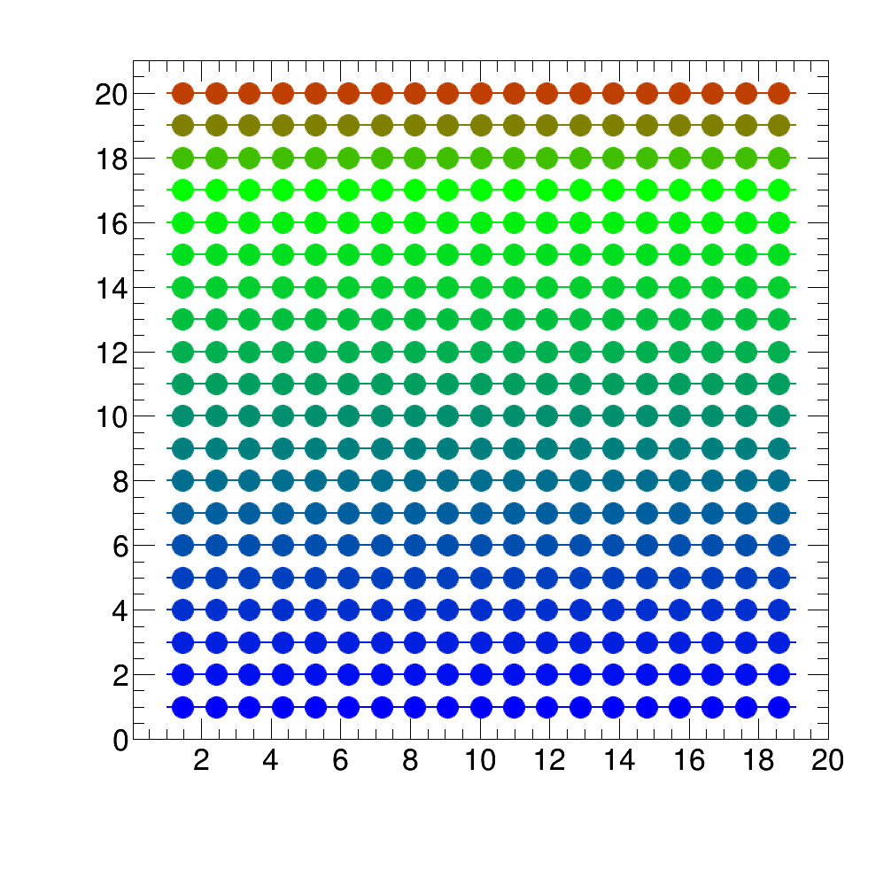
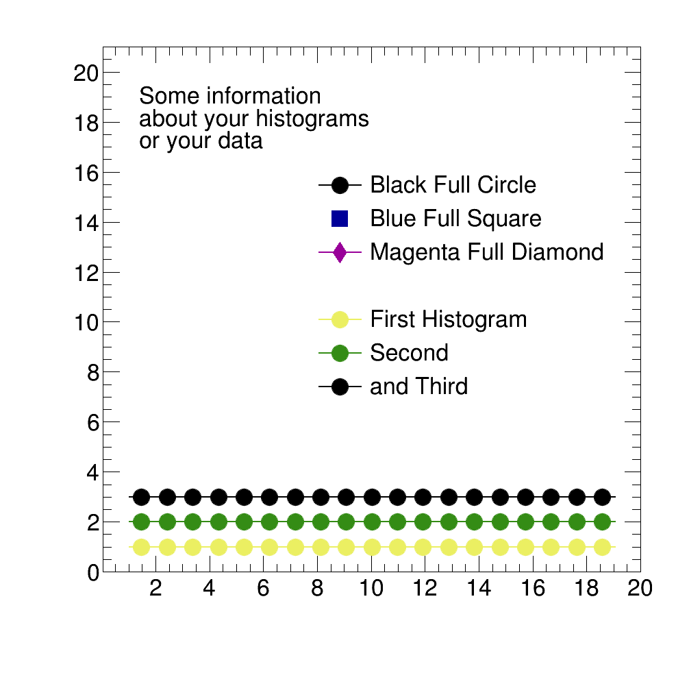

Collection of examples for different features of the interface.
Basic Layout of Plotting Code
The following example will demonstrate the basic syntax of the interface. Assume you have two histograms called black and white and a ratio called grey.
TH1D* black = new TH1D("black", "", 100, -3, 3);
black->Sumw2();
black->FillRandom("gaus", 10000);
TH1D* white = new TH1D("white", "", 100, -3, 3);
white->Sumw2();
white->FillRandom("gaus", 10000);
TH1D* grey = (TH1D*)black->Clone("grey");
grey->Divide(white);
First create two object arrays for the main plot and the ratio.
TObjArray* main = new TObjArray();
main->Add(black);
main->Add(white);
TObjArray* ratio = new TObjArray();
ratio->Add(grey);
Now we generate legends for this plot:
Legend* l =
new Legend(main,
"Black Histo\n White Histo\n",
"lp lp",
"",
"l");
TString info = TString("Black and White Histogram\n");
info.Append("Example\n");
TLegend* lInfo =
new Legend(info.Data(), 2);
main->Add(lInfo);
Then we define marker colors and styles. The ones for the ratios will be added after the ones for the main pad.
vector<Color_t> colors = {kBlack, kBlack, kBlack+3};
vector<Style_t> markers = {kFullCircle, kOpenCircle, kFullCircle};
vector<Size_t> sizes = {2., 2., 2.};
Adjusting the legend position:
And finally create the Canvasses:
square.
SetStyle(colors, markers, sizes);
square.
Draw(TString(
"Square.pdf"));
main->AddBefore(lInfo, ll);
rat.
Draw(TString(
"Ratio.pdf"));
Results:

Square Plot

Ratio Plot
RatioPlot
The syntax for a RatioPlot is very similar to that of a SquarePlot:
just_the_ratio.
Draw(
"just_ratio.png");

Example of Ratio Plot using the grey array from above
HeatMapPlot
The syntax for a HeatMapPlot is also quite similar to that of a SquarePlot. The main difference to a SquarePlot is that the first entry of the array that is to be plotted must be a TH2.
TH2I* heat = new TH2I("heat", "", 20, 1, 20, 20, 1, 20);
for (Int_t binx = 1; binx < 20; binx++){
for (Int_t biny = 1; biny < 20; biny++){
heat->SetBinContent(binx, biny, binx + biny + binx*biny);
}
}
TObjArray* heatArray = new TObjArray();
heatArray->Add(heat);
heatArray->Add(legend);
heatMap.
SetLog(kFALSE, kFALSE, kTRUE);
heatMap.
Draw(
"heat.png");

Example of a HeatMapPlot
Defining Colors and Color Gradients
Before defining the colors, we define some histograms we can use for testing:
TObjArray* pal = new TObjArray();
TObjArray* indices = new TObjArray();
palette[0] = new TH1I("palette", "", 20, 1, 20);
pal->Add(palette[0]);
for (Int_t bin = 1; bin < palette[0]->GetNbinsX(); bin++){
palette[0]->SetBinContent(bin, 1);
palette[0]->SetBinError(bin, 0.00001);
}
for (Int_t hist = 1; hist < 20; hist++){
palette[hist] = (TH1I*)palette[0]->Clone(Form("palette_%d", hist));
palette[hist]->Scale(hist+1);
pal->Add(palette[hist]);
}
indices->Add(palette[0]);
indices->Add(palette[1]);
indices->Add(palette[2]);
Colors can then be defined as follows:
color blue {0.00, 0.00, 1.00};
color green {0.00, 1.00, 0.00};
color red {1.00, 0.00, 0.00};
The ROOT color index of these colors can then be accessed by the index attribute of color:
Color_t index_of_color_blue = blue.
index;
Color_t index_of_color_red = red.
index;
Color_t index_of_color_green = green.
index;
This color index can then be used like any other ROOT color index:
vector<Style_t> markersPal (20, kFullCircle);
vector<Size_t> sizesPal (20, 3.);
TMarker* marker = new TMarker();
indices_usage.
SetStyle(RGB_Colors, markersPal, sizesPal);
indices_usage.
Draw(
"indices.png");

Example: Usage of user defined colors with color indices
Color gradients can be defined from color points via the ColorGradient class as follows:
vector<color> rgbRainbow = {blue, green, red};
vector<Double_t> spacing = {0., 0.8, 1.};
They can be used either directly as the color array or set as the current palette:
vector<Color_t> colors_rainbow = rgb_rainbow.GetGradient();
direct_usage.
SetStyle(colors_rainbow, markersPal, sizesPal);
direct_usage.
Draw(
"direct.png");
palette_usage.
SetPalette(blue_green_somered, kFALSE);
palette_usage.
Draw(
"palette.png");

Example: Usage of user defined palette colors_rainbow via color vector

Example: Usage of user defined palette blue_green_somered via ColorGradient
Legend Usage
Generate a legend from a TObjArray:
TLegend* lIndices =
new Legend(indices,
"First Histogram\n Second\n and Third",
"lp lp lp",
"", 3,
"indices");
indices->Add(lIndices);
Or with dummy markers from a string with marker specifications:
std::string marker_information = Form("%d %d %f \n %d %d %f \n %d %d %f", kBlack, kFullCircle, 3., kBlue+2, kFullSquare, 3., kMagenta+2, kFullDiamond, 4.);
TLegend* lDummyMarkers =
new Legend(marker_information.data(),
"Black Full Circle\n Blue Full Square\n Magenta Full Diamond",
"lp p lp", 3,
"lDummyMarkers");
indices->Add(lDummyMarkers);
Or a legend containing information about your plot:
TLegend* lInformation =
new Legend(
"Some information \n about your histograms \n or your data", 3,
"lInformation");
indices->Add(lInformation);
Each legend can be placed individually:
And plotted by adding them to the array:
legends.
Draw(
"legends.png");

Example: Different Methods for defining a legend
 1.8.5
1.8.5